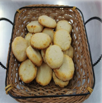

← Volver al módulo 4

Cocadas
Dulces cocadas preparadas con coco rallado, leche condensada y esencia de coco, horneadas hasta dorar.
Ingredientes
- 5 cucharas de mantequilla pil
- 2 huevos
- ½ taza de leche condensada
- ½ taza de azúcar impalpable
- 5 cucharas de maicena
- 5 tazas de coco rallado
- 1 cucharilla de esencia de coco
Preparación
Preparar el mise en place.
En un sartén, retostar la leche condensada y colocar en un bol. Añadir coco, maicena, azúcar impalpable, huevo, esencia de coco y mantequilla pil. Mezclar y compactar hasta obtener una mezcla manejable para formar bolitas.
Colocar las bolitas en una placa enmantecada y llevar a hornear a 180 ºC por 15-20 minutos hasta dorar.